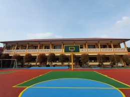
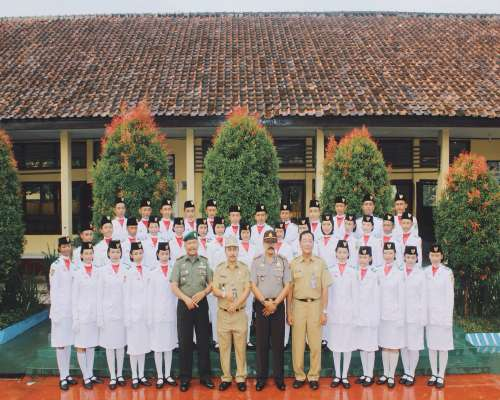

Assalamu’alaikum Wr. Wb.
Alhamdulillahirabbil’alamiin kita ucapkan kehadirat Allah SWT yang selalu melimpahkan rahmat dan kurnia Nya kepada kita semua sehingga berhasil membangun Integrasi website dengan mini sosial media sekolah, pengumuman terintegrasi, elearning, penilaian, materi online, tugas online, bimbingan konseling, publish tulisan/jurnal, sharing alumni & lowongan, info dan motivasi oleh dari alumni, penelusuran tamatan, dan lain-lain sebagainya.. Dengan adanya website Sekolah di harapkan dapat memudahkan informasi secara terbuka kepada warga sekolah, alumni, masyarakat dan instansi lain yang terkait.
Semoga dengan kehadiran website ini akan terjalin informasi dan komunikasi antar warga sekolah, alumni, masyarakat dan instansi terkait dengan cepat tentang perkembangan sekolah baik peserta didik, pendidik, tenaga kependidikan dan sarana prasarana.
Keberadaan website ini sangat bermanfaat jika semua warga sekolah memiliki kesiapan untuk menggunakan computer dan internet agar dapat mengakses segala informasi yang berhubungan dengan sekolah.
Selamat bekerja dan berkarya
Demikian dan terimakasih
Wassalamu’alaikum Wr, Wb.
Kami menyediakan fasilitas lengkap untuk mendukung kegiatan belajar mengajar.
Lapang Basket
Beragam kegiatan ekstrakurikuler untuk mengembangkan minat dan bakat siswa.
Pasgibra SMAN 1 LURAGUNG